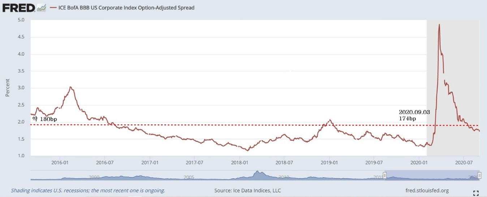

QLTA [iShares:Aaa-A Rated Co]
Ver.Teptember 08, 2020
A. 테마
i. Covid-19이전 IG 채권과 HY 채권 축소차는 각각 40bp (투자등급), 140bp(고수익)으로, 투자등급 채권보다 고수익 채권의 하락 마진이 더 큼.
ii. IG등급 회사채권은 스프레드가 약 180bp 이하일때, 매력적이지 않다. _ Capital Group
iii. (장기적으로 180bp 아래에 있던 경우도 많았으나, 고정수입이 1.8%이하로 적으며, 해당 시기 다른 자산이 매력적일 가능성)

B. 현황 및 계획
i. 해당 스프레드는 현재 154bp로 매력적이지 않은 구간에 도달